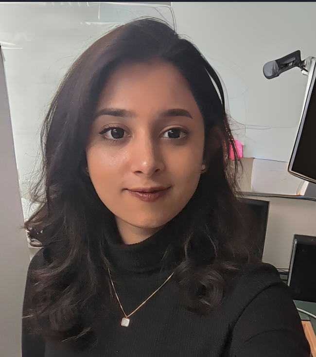

Jarin Tasnim
M.Sc. Computer Science, University of Saskatchewan. I study how software is maintained and evolved, with a focus on backporting and technical debt.
About
I am a researcher in empirical software engineering. My M.Sc. work at the Software Research Lab (SRLab), University of Saskatchewan, examined how backporting fixes to stable releases affects software quality, in collaboration with open-source communities such as Ansible, Kibana and Elasticsearch, under the supervision of Dr. Chanchal Roy and Dr. Kevin Schneider.
Before graduate school, I worked as a software engineer on IPEMIS, a national education system for Bangladesh's Directorate of Primary Education, funded by UNICEF and used by more than 20 million registered students.
Research interests
Software backporting
Technical debt
Human factors
Mining software repositories
Publications
How does quality deviate in stable releases by backporting?
ICSE NIER 2023Found that code entities backported into stable releases tend to gradually grow in size, complexity and coupling, and that quality degradation was often linked to vulnerable changes moving through the backport process.
PaperAn Insight into the Technical Debt-Fix Trade Off in Software Backporting
CASCON 2023Examined 105,396 backport-related commits across 87 repositories in the Apache, Eclipse and Python ecosystems. Apache projects accumulate more total technical debt, while less active Python and Eclipse projects show higher debt density, making maintenance harder per code change.
PaperAn Empirical Study of the Polarization of Consumers during COVID-19 Pandemic
Springer LNNSUsed regression analysis in SPSS to identify key predictors of consumer polarization and behaviour toward online food delivery during COVID-19.
PaperA Comprehensive Study on Quality Aspects and Industry Perspective in Backporting
M.Sc. thesis, 2024Experience
Research Assistant, University of Saskatchewan
- Worked with open-source developers and stakeholders from Ansible, Kibana and Elasticsearch to support backporting research, under Dr. Chanchal Roy and Dr. Kevin Schneider at SRLab, in partnership with the Apache Software Foundation.
- Produced gap, impact and SWOT analyses across software releases.
- Cleaned and analyzed repository data with Python (Pandas, NumPy, PyGithub).
Teaching Assistant, University of Saskatchewan
- CMPT 214 (Programming Principles and Practice), CMPT 280 (Intermediate Data Structures and Algorithms), CMPT 370 (Introduction to Software Engineering).
- Created inclusive, accessible instructional materials and supported students through office hours, one-on-one mentoring, and formative assessment.
Software Engineer, Dynamic Solution Innovators
- Contributed to IPEMIS, developed for Bangladesh's Directorate of Primary Education and funded by UNICEF, currently used by more than 20 million registered students.
Research Assistant, Shahjalal University of Science and Technology
- Worked under Dr. Forhad Rabbi on ongoing research projects; maintained HCI-focused undergraduate thesis groups and assisted with research proposals for grants.
Awards & service
- Best Research Award, Computer Science Research Fest 2023, University of Saskatchewan
- Best Reviewer Award, International Conference on Software Maintenance and Evolution (ICSME)
- Vice-President (Social), Computer Science Graduate Council (CSGC), University of Saskatchewan